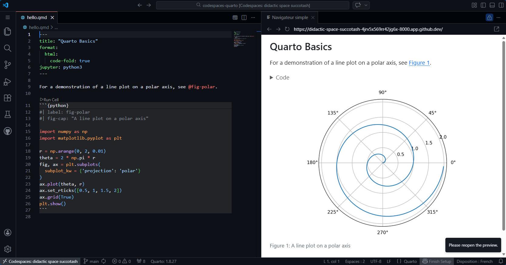

GitHub Codespaces + Quarto
Setting up working environements can be cumbersome and time consumming. To speed up this process and to avoid wasting time debugging local configuration, one can use GitHub Codespaces. In this blog post I will walk you through a template repository I have created to get started with Quarto environnement, an open-source scientific and technical publishing system.
GitHub Codespaces
GitHub Codespaces are a development environment that’s hosted in the cloud. Codespace uses a container to provide common languages, tools, and utilities for development. Projects are customizable by configuring dev container files inside the repository (often known as configuration-as-code), which creates a repeatable codespace configuration. Once, initially configured, it is very simple to share custom-made development environment.
Each codespace is hosted by GitHub in a Docker container, running on a virtual machine. All GitHub personal accounts include: - \(120\) hours of free compute time. - \(15\) GB storage a month.
You can use this repository as a template for your own projects. To do so, click the “Open in GitHub Codespaces” just below. This will create a new repository with the same files and structure.

Hello World! Please read my Closeread story below.
Configuring Codespaces
When you work in a codespace, the environment is created using a development container, or dev container, hosted on a virtual machine. You can configure these dev containers to tailored your development environment with tools and runtimes required to work on a specific project.
The configuration files for a dev container are located in a
.devcontainer/directory at the root level of your repository.
devcontainer.json
The primary file in a dev container configuration is the devcontainer.json file, usually located in the .devcontainer directory of your repository. It determine the environment of codespaces created for your repository.
{
"name": "Quarto Codespaces",
"image": "mcr.microsoft.com/devcontainers/base:ubuntu",
<SNIP…>
}image
The default Linux image is perfect start. It is based on Ubuntu packed with several programming language : Python, Node.js, JavaScript, TypeScript, C++, Java, C#, F#, .NET Core, PHP, Go, Ruby, and Conda.
features
Dev Container Features are self-contained units of installation code and development container configuration. Features are designed to install atop a wide-range of base container images.
Options
"hostRequirements": Whiledevcontainer.jsondoes not focus on hardware or VM provisioning, it can be useful to know one container’s minimum RAM, CPU, and storage requirements."postCreateCommand": This command finalizes container setup when a dev container is created. We’ll use it to install Python packges listed insiderequirements.txtfile."customization": Customize the user experience while working inside hte container.

GitHub Codespaces ♥️ Quarto
Welcome to a custom made GitHub Codespaces repository packed with everything needed to get started with Quarto.
🔋 Batteries included
At creation, the codespace comes with: - lastest version of Python and pre-installed packages: - jupyter - matplotlib - plotly - VS Code for the web and useful extensions: - Quarto - Python - Jupyter
{
"name": "Quarto Codespaces",
// Default Linux image (smaller than universal)
"image": "mcr.microsoft.com/devcontainers/base:ubuntu",
// Install Quarto CLI
"features": {
"ghcr.io/devcontainers/features/python:1": {
"version": "latest"
},
"ghcr.io/rocker-org/devcontainer-features/quarto-cli:1": {
"version": "latest"
}
},
// Specify host characteristics
"hostRequirements": {
"cpus": 4
},
// Finalize devcontainer setup
"waitFor": "onCreateCommand",
"updateContentCommand": "python3 -m pip install -r requirements.txt",
"postAttachCommand": {
"server": "quarto preview hello.qmd --output-dir _page --no-browser --port 8000"
},
"portsAttributes": {
"8000": {
"label": "Quarto Preview",
"onAutoForward": "openPreview"
}
},
"customizations": {
// Open hello.qmd at codespace start
"codespaces": {
"openFiles" : [
"hello.qmd"
]
},
// Configure VSCode to our needs
"vscode": {
"extensions": [ // preinstall VSCode extensions
"quarto.quarto",
"ms-python.python",
"ms-toolsai.jupyter"
]
}
},
"forwardPorts": [8000]
}